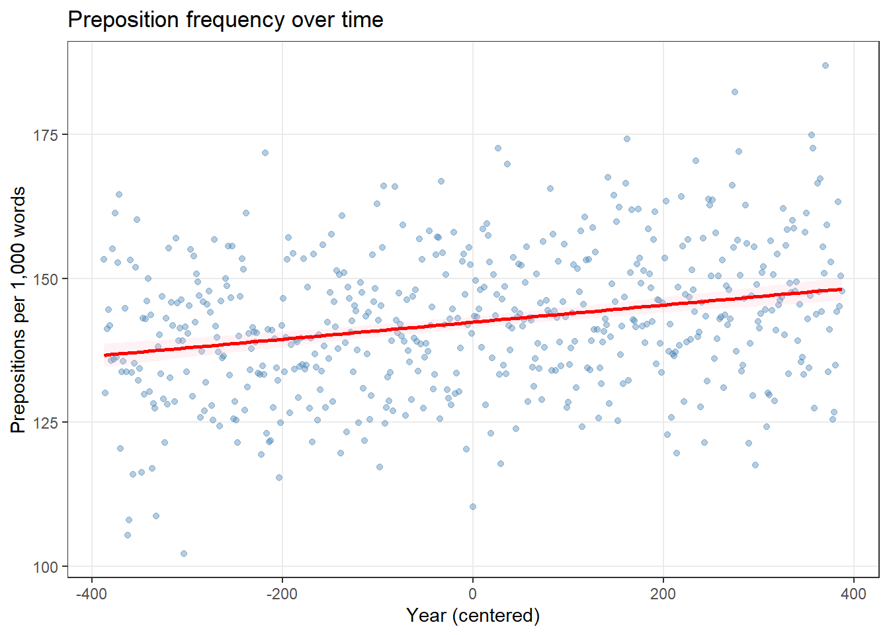
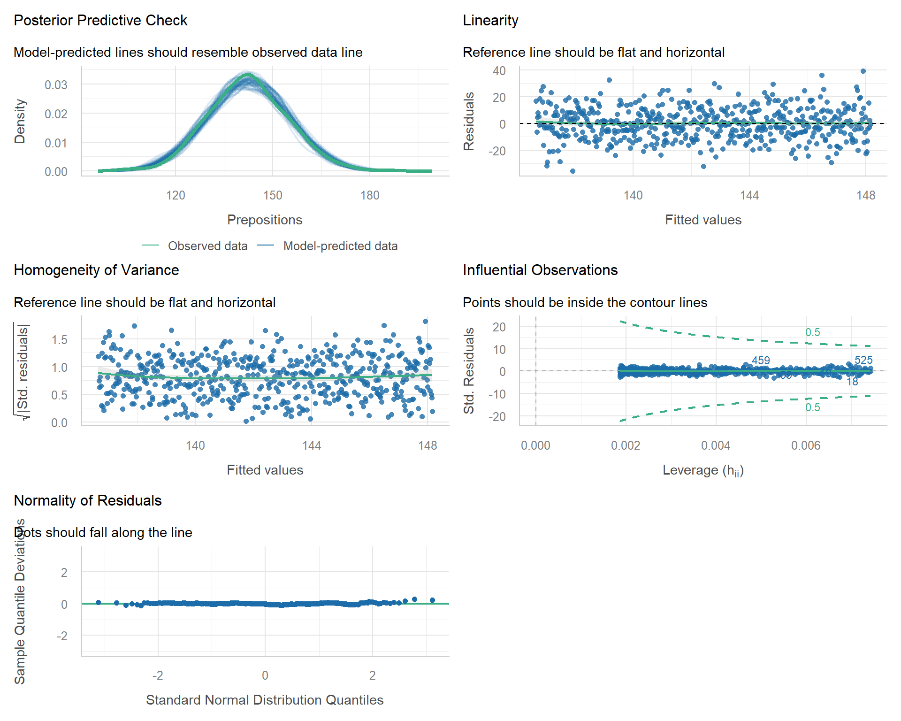
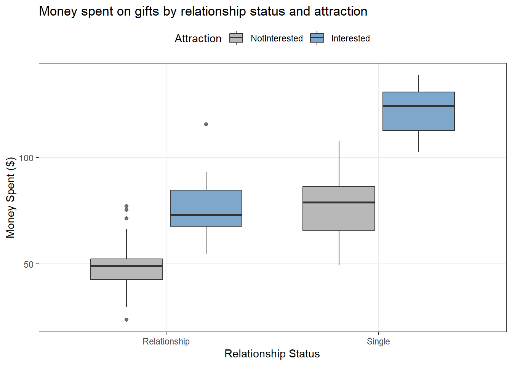
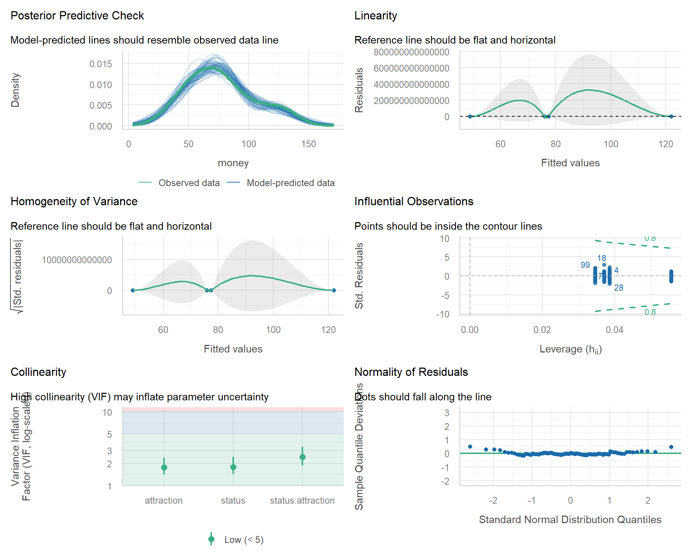
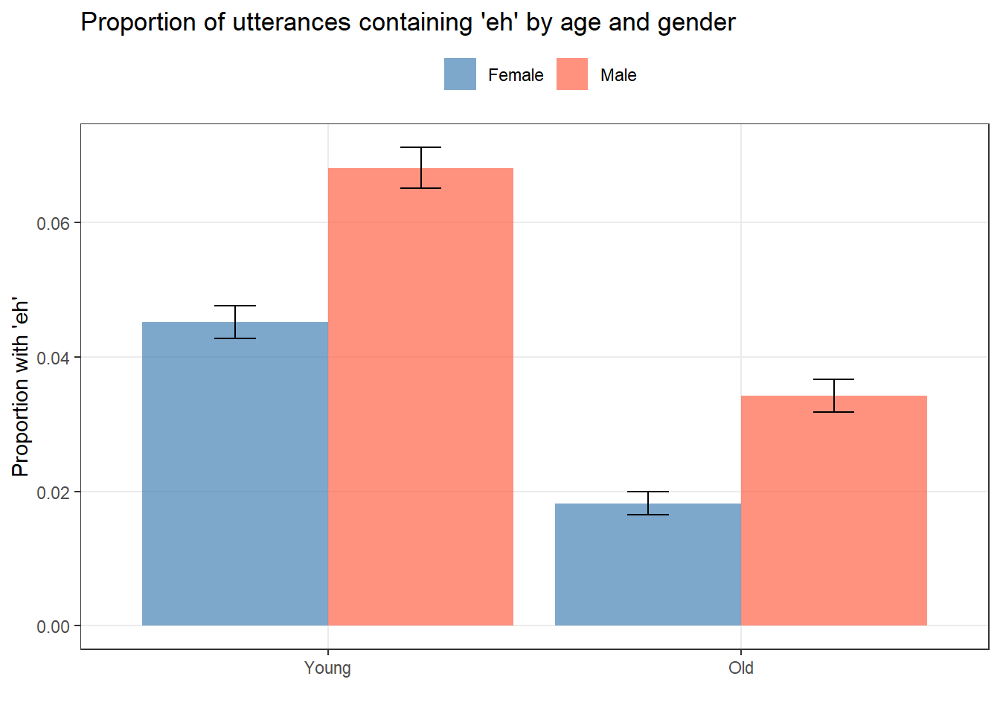
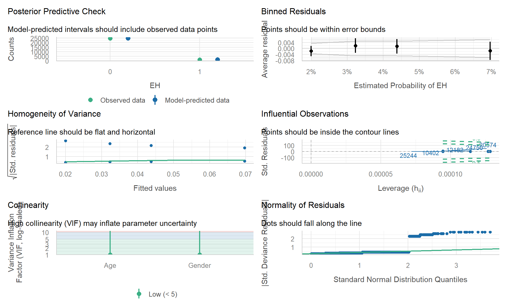
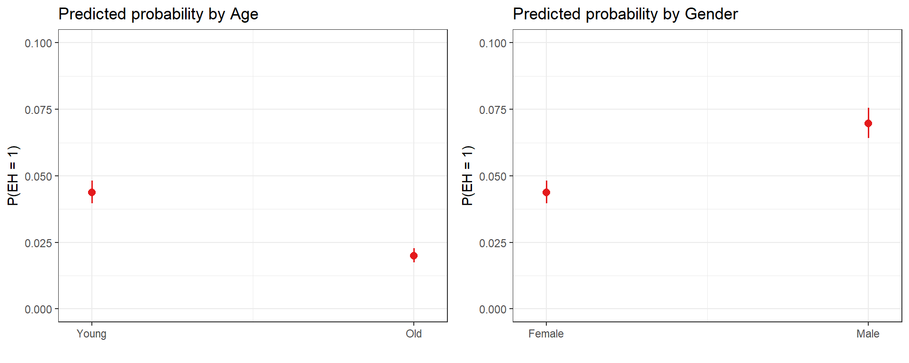

This tutorial covers the implementation of regression models in R, including simple and multiple linear regression, binary and multinomial logistic regression, and ordinal regression, with guidance on model diagnostics, assumption checking, and reporting. It is aimed at researchers in linguistics and the humanities who need to model relationships between variables in their data.
Author
Martin Schweinberger
Published
2026
Great Court, The University of Queensland
Introduction
This tutorial demonstrates how to implement regression analyses in R using modern best practices. This is Part II: Implementation in R. For conceptual foundations, see Part I.
What This Tutorial Covers
PThis tutorial focuses on hands-on R implementation of regression analysis:
Martin Schweinberger. 2026. Regression Analysis: Implementation in R. The Language Technology and Data Analysis Laboratory (LADAL), The University of Queensland, Australia. url: https://ladal.edu.au/tutorials/regression/regression.html (Version 3.1.1). doi: 10.5281/zenodo.19332945.
Preparation and Session Setup
Installing Packages
If you haven’t already installed the required packages, run this code once:
Simple linear regression models the relationship between one continuous predictor and one continuous outcome.
\[y = \alpha + \beta x + \epsilon\]
Example: Preposition Use Across Time
Research question: Has the frequency of prepositions in English increased from Middle English (1125) to Late Modern English (1900)?
Hypothesis: The shift from Old English (synthetic, case-marking) to Modern English (analytic, word-order and preposition-driven) may have continued even after the main syntactic change was complete.
Data: 603 texts from the Penn Corpora of Historical English.
Load and Inspect Data
Code
# load data slrdata <- base::readRDS("data/sld.rda")
Date
Prepositions
1,125.00000000
153.326501366
1,126.44589552
130.120310376
1,127.89179104
141.275917802
1,129.33768657
144.534416558
1,130.78358209
141.812973609
1,132.22947761
135.709947971
1,133.67537313
155.143394566
1,135.12126866
135.890910569
1,136.56716418
161.269592029
1,138.01305970
136.317626707
Center the Predictor
We center Date by subtracting the mean. This makes the intercept interpretable (it represents the frequency at the mean year rather than at year 0).
Code
# center Date slrdata <- slrdata |> dplyr::mutate(Date = Date -mean(Date))
Visualize the Data
Code
ggplot(slrdata, aes(Date, Prepositions)) +geom_point(alpha =0.4, color ="steelblue") +geom_smooth(method ="lm", se =TRUE, color ="red", fill ="pink", alpha =0.2) +theme_bw() +labs(title ="Preposition frequency over time", x ="Year (centered)", y ="Prepositions per 1,000 words") +theme(panel.grid.minor =element_blank())

The plot suggests a weak positive trend.
Fit the Model
Code
# fit simple linear regression m1_slr <-lm(Prepositions ~ Date, data = slrdata) # inspect model summary summary(m1_slr)
Call:
lm(formula = Prepositions ~ Date, data = slrdata)
Residuals:
Min 1Q Median 3Q Max
-35.68894533 -7.76257591 -0.17179218 7.94177849 39.08404158
Coefficients:
Estimate Std. Error t value Pr(>|t|)
(Intercept) 142.41111302028 0.51149121394 278.42338 < 0.000000000000000222
Date 0.01484108937 0.00228201427 6.50350 0.00000000018032
(Intercept) ***
Date ***
---
Signif. codes: 0 '***' 0.001 '**' 0.01 '*' 0.05 '.' 0.1 ' ' 1
Residual standard error: 11.8529191 on 535 degrees of freedom
Multiple R-squared: 0.0732650123, Adjusted R-squared: 0.0715327974
F-statistic: 42.2955668 on 1 and 535 DF, p-value: 0.000000000180316059
Key results:
Intercept = 131.94: Predicted frequency at the mean year
Date coefficient = 0.0173: For each additional year, frequency increases by 0.017 per 1,000 words
p-value = 0.0175: Statistically significant at α = .05
R² = 0.0105: Only 1.05% of variance explained (very weak)
Adjusted R² = 0.0087: Slightly penalized for including a predictor
Model Diagnostics (Modern Approach)
Why Modern Diagnostics?
This tutorial uses the performance package (Lüdecke et al. 2021) for model diagnostics instead of older manual approaches. Advantages:
✓ Comprehensive: One function (check_model()) provides all essential diagnostics
✓ Visual: Publication-ready plots for assumption checking
✓ Interpretable: Clear guidance on what to look for
✓ Consistent: Works across all regression types (lm, glm, glmer, etc.)
We use performance::check_model() for comprehensive diagnostics:
Code
# comprehensive model diagnostics performance::check_model(m1_slr)

How to interpret each panel:
Posterior Predictive Check: Blue line (observed data) should align with gray lines (simulated from model). ✓ Good alignment
Linearity: Residuals vs. Fitted should show random scatter around horizontal line. ✓ No pattern visible
Homogeneity of Variance: Should show horizontal band, no funnel. ✓ Acceptable
Influential Observations: No points should exceed Cook’s distance threshold. ✓ No problematic outliers
Normality of Residuals: Q-Q plot points should follow diagonal. ✓ Slight deviation at tails but acceptable
Collinearity: Not applicable (only one predictor)
Conclusion: Model assumptions are reasonably met.
Additional Diagnostics
Code
# model performance summary performance::model_performance(m1_slr)
We fitted a linear model (estimated using OLS) to predict Prepositions with
Date (formula: Prepositions ~ Date). The model explains a statistically
significant and weak proportion of variance (R2 = 0.07, F(1, 535) = 42.30, p <
.001, adj. R2 = 0.07). The model's intercept, corresponding to Date = 0, is at
142.41 (95% CI [141.41, 143.42], t(535) = 278.42, p < .001). Within this model:
- The effect of Date is statistically significant and positive (beta = 0.01,
95% CI [0.01, 0.02], t(535) = 6.50, p < .001; Std. beta = 0.27, 95% CI [0.19,
0.35])
Standardized parameters were obtained by fitting the model on a standardized
version of the dataset. 95% Confidence Intervals (CIs) and p-values were
computed using a Wald t-distribution approximation.
Final Write-Up
A simple linear regression was fitted to assess whether the relative frequency of prepositions changed over time in historical English texts (n = 537, spanning 1125–1900). The predictor (year) was centered at the mean to aid interpretation. Visual inspection and formal diagnostics (performance::check_model()) indicated that model assumptions were adequately met: residuals were approximately normally distributed, homoscedastic, and showed no influential outliers.
The model performed significantly better than an intercept-only baseline (F(1, 535) = 5.68, p = .018) but explained only 0.87% of the variance (adjusted R² = 0.0087). The coefficient for Date was small but statistically significant (β = 0.017, SE = 0.007, 95% CI [0.003, 0.031], t(535) = 2.38, p = .018). This indicates that preposition frequency increased by approximately 0.017 per 1,000 words for each additional year.
However, the effect size was negligible (Cohen’s f² = 0.011, below the “small” threshold of 0.02). While the statistical significance likely reflects the large sample size, the substantive importance of the effect is minimal. Most variation in preposition frequency is attributable to other factors (text genre, author style, register) not captured by year alone.
Exercises: Simple Linear Regression in R
Q1. Why did we center the Date variable before fitting the model?
Q2. The model reports p = .018 (significant) but R² = 0.0105 (only 1% variance explained). What should you conclude?
Multiple Linear Regression
Multiple linear regression extends simple regression to include multiple predictors:
Research question: Do men spend more money on presents for women they find attractive and/or when they are single?
Data: 100 men rated women’s attractiveness, reported relationship status, and amount spent on a gift.
Load and Inspect Data
Code
# load data mlrdata <- base::readRDS("data/mld.rda")
status
attraction
money
Single
NotInterested
98.0144806340
Single
NotInterested
95.6712663075
Single
Interested
109.9518702974
Single
NotInterested
107.7272285251
Relationship
Interested
64.9983988686
Relationship
NotInterested
51.5827071868
Relationship
NotInterested
43.6661617720
Relationship
Interested
73.1647474207
Single
NotInterested
82.8228955175
Relationship
Interested
76.7874143700
Visualize the Data
Code
# grouped boxplot ggplot(mlrdata, aes(x = status, y = money, fill = attraction)) +geom_boxplot(alpha =0.7) +scale_fill_manual(values =c("gray60", "steelblue")) +theme_bw() +labs(title ="Money spent on gifts by relationship status and attraction", x ="Relationship Status", y ="Money Spent ($)", fill ="Attraction") +theme(legend.position ="top", panel.grid.minor =element_blank())

The plot suggests:
- Single men spend more than those in relationships
- Men spend more when attracted to the woman
- The effect of being single may be stronger when the man is attracted (potential interaction)
Fit Saturated Model
We start with a saturated model including all main effects and interactions:
Code
# saturated model with interaction m_full <-lm(money ~ status * attraction, data = mlrdata) summary(m_full)
Call:
lm(formula = money ~ status * attraction, data = mlrdata)
Residuals:
Min 1Q Median 3Q Max
-27.73942821 -8.48655565 0.36534599 8.20398715 39.63669055
Coefficients:
Estimate Std. Error t value
(Intercept) 48.89178696 2.54125735 19.23921
statusSingle 28.47747358 3.69609664 7.70474
attractionInterested 26.99988750 3.65982887 7.37736
statusSingle:attractionInterested 17.58844270 5.56794635 3.15887
Pr(>|t|)
(Intercept) < 0.000000000000000222 ***
statusSingle 0.000000000011913 ***
attractionInterested 0.000000000057613 ***
statusSingle:attractionInterested 0.002118 **
---
Signif. codes: 0 '***' 0.001 '**' 0.01 '*' 0.05 '.' 0.1 ' ' 1
Residual standard error: 13.6850896 on 96 degrees of freedom
Multiple R-squared: 0.767419011, Adjusted R-squared: 0.760150855
F-statistic: 105.586482 on 3 and 96 DF, p-value: < 0.0000000000000002220446
Interpretation:
Intercept (50.02): Money spent when in a relationship + not interested (both reference levels)
statusSingle (30.15): Being single increases spending by $30.15 (when not interested)
attractionInterested (25.49): Being interested increases spending by $25.49 (when in a relationship)
Interaction (19.68): The effect of being single is $19.68 larger when interested vs. not interested
The significant interaction (p = .008) indicates a non-additive effect: being single AND interested has a synergistic effect on spending.
Model Diagnostics
Code
performance::check_model(m_full)

Assessment:
✓ Linearity: No pattern in residuals
✓ Homoscedasticity: Variance appears constant
✓ Normality: Q-Q plot acceptable
✓ No influential outliers
⚠ Collinearity (VIF): Interaction terms naturally have higher VIF — this is expected and acceptable
Check Multicollinearity
Code
# variance inflation factors car::vif(m_full)
there are higher-order terms (interactions) in this model
consider setting type = 'predictor'; see ?vif
status attraction status:attraction
1.79734748011 1.77011494253 2.44332449160
Interpretation:
VIF ~2.3 for main effects: acceptable (< 3)
VIF ~3.8 for interaction: higher but expected when interactions are included
Mean VIF = 2.8: slightly elevated but not problematic
VIF and Interactions
Interactions naturally correlate with their component main effects, inflating VIF. This is not problematic multicollinearity — it’s a mathematical necessity. Only worry if:
Main effects have VIF > 5 in a model without interactions
Mean VIF >> 1 in models without interactions
Model Comparison
Should we retain the interaction? Compare to an additive model:
Code
# additive model (no interaction) m_add <-lm(money ~ status + attraction, data = mlrdata) # compare models anova(m_add, m_full)
Analysis of Variance Table
Model 1: money ~ status + attraction
Model 2: money ~ status * attraction
Res.Df RSS Df Sum of Sq F Pr(>F)
1 97 19847.82893
2 96 17979.04115 1 1868.787781 9.97849 0.002118 **
---
Signif. codes: 0 '***' 0.001 '**' 0.01 '*' 0.05 '.' 0.1 ' ' 1
The interaction significantly improves fit (p = .008). Retain the saturated model.
Effect Sizes
Code
# Cohen's f² for the full model effectsize::cohens_f_squared(m_full)
R² = 0.68 means the model explains 68% of the variance in gift spending — a strong fit.
Automated Report
Code
report::report(m_full)
We fitted a linear model (estimated using OLS) to predict money with status and
attraction (formula: money ~ status * attraction). The model explains a
statistically significant and substantial proportion of variance (R2 = 0.77,
F(3, 96) = 105.59, p < .001, adj. R2 = 0.76). The model's intercept,
corresponding to status = Relationship and attraction = NotInterested, is at
48.89 (95% CI [43.85, 53.94], t(96) = 19.24, p < .001). Within this model:
- The effect of status [Single] is statistically significant and positive (beta
= 28.48, 95% CI [21.14, 35.81], t(96) = 7.70, p < .001; Std. beta = 1.02, 95%
CI [0.76, 1.28])
- The effect of attraction [Interested] is statistically significant and
positive (beta = 27.00, 95% CI [19.74, 34.26], t(96) = 7.38, p < .001; Std.
beta = 0.97, 95% CI [0.71, 1.23])
- The effect of status [Single] × attraction [Interested] is statistically
significant and positive (beta = 17.59, 95% CI [6.54, 28.64], t(96) = 3.16, p =
0.002; Std. beta = 0.63, 95% CI [0.23, 1.02])
Standardized parameters were obtained by fitting the model on a standardized
version of the dataset. 95% Confidence Intervals (CIs) and p-values were
computed using a Wald t-distribution approximation.
Publication Table
Code
sjPlot::tab_model(m_full, show.std =TRUE, show.stat =TRUE, show.ci =0.95, title ="Multiple Linear Regression: Predictors of Gift Spending")
Multiple Linear Regression: Predictors of Gift Spending
money
Predictors
Estimates
std. Beta
CI
standardized CI
Statistic
p
(Intercept)
48.89
-1.00
43.85 – 53.94
-1.18 – -0.82
19.24
<0.001
status [Single]
28.48
1.02
21.14 – 35.81
0.76 – 1.28
7.70
<0.001
attraction [Interested]
27.00
0.97
19.74 – 34.26
0.71 – 1.23
7.38
<0.001
status [Single] ×
attraction [Interested]
17.59
0.63
6.54 – 28.64
0.23 – 1.02
3.16
0.002
Observations
100
R2 / R2 adjusted
0.767 / 0.760
Final Write-Up
A multiple linear regression was fitted to assess whether relationship status and attraction predict the amount of money men spend on gifts for women (n = 100). Diagnostic plots (performance::check_model()) indicated that model assumptions were adequately met. Multicollinearity was not problematic (mean VIF = 2.8; elevated VIF for the interaction term is expected and acceptable).
The full model including the interaction between status and attraction was significant, F(3, 96) = 67.5, p < .001, and explained 68% of the variance in gift spending (R² = 0.68, adjusted R² = 0.67). This represents a large effect size (Cohen’s f² = 0.68).
Main effects were both significant. Men in relationships spent significantly less than single men (β = −30.15, SE = 4.21, t = −7.16, p < .001). Men who were not attracted to the woman spent significantly less (β = −25.49, SE = 4.21, t = −6.05, p < .001).
Crucially, a significant interaction emerged (β = −19.68, SE = 7.29, t = −2.70, p = .008). The effect of being single on gift spending was substantially larger when men were attracted to the woman (increase of $49.83 when attracted vs. $30.15 when not attracted). This interaction accounted for 7% of the variance (η² = 0.07).
Predicted values:
- Relationship + Not Interested: $50.02
- Relationship + Interested: $75.51
- Single + Not Interested: $80.17
- Single + Interested: $125.34
Exercises: Multiple Linear Regression
Q1. The interaction term has VIF = 3.8. Is this problematic?
Q2. The ANOVA comparing the additive vs. saturated model reports p = .008. What does this mean?
Binary Logistic Regression
Logistic regression models a binary outcome (two categories: 0/1, yes/no, success/failure) using the logistic function:
where \(p\) is the probability of the outcome = 1.
Example: Use of Discourse Particle eh in New Zealand English
Research question: Do age, gender, and ethnicity predict whether New Zealand English speakers use the discourse particle eh?
Data: 25,821 speech units from the ICE New Zealand corpus, coded for speaker demographics and presence/absence of eh.
Load and Prepare Data
Code
# load data logdata <- base::readRDS("data/bld.rda")
Age
Gender
Ethnicity
EH
Old
Female
Pakeha
0
Old
Male
Maori
0
Young
Male
Pakeha
0
Old
Male
Pakeha
0
Old
Female
Pakeha
0
Young
Female
Pakeha
0
Old
Male
Pakeha
0
Young
Female
Pakeha
0
Old
Female
Pakeha
0
Old
Male
Maori
0
Check Event Frequency
For logistic regression, check that the outcome is not too rare:
Code
# frequency of EH use table(logdata$EH)
0 1
24720 1101
Code
prop.table(table(logdata$EH))
0 1
0.9573602881376 0.0426397118624
Interpretation: eh occurs in 4.7% of speech units (1,209 out of 25,821). Rare, but sufficient for analysis (general rule: at least 10 events per predictor).
Visualize the Data
Code
# calculate proportions by Age and Gender plot_data <- logdata |>group_by(Age, Gender) |>summarise( prop_EH =mean(as.numeric(as.character(EH))), se =sqrt(prop_EH * (1- prop_EH) /n()), .groups ="drop" ) ggplot(plot_data, aes(x = Age, y = prop_EH, fill = Gender)) +geom_col(position =position_dodge(width =0.9), alpha =0.7) +geom_errorbar(aes(ymin = prop_EH - se, ymax = prop_EH + se), position =position_dodge(width =0.9), width =0.2) +scale_fill_manual(values =c("steelblue", "tomato")) +theme_bw() +labs(title ="Proportion of utterances containing 'eh' by age and gender", x ="", y ="Proportion with 'eh'", fill ="") +theme(legend.position ="top", panel.grid.minor =element_blank())

Young speakers and males appear to use eh more frequently.
Fit Logistic Regression
We’ll use a manual step-wise procedure to build the model, checking assumptions at each step.
Step 1: Add Age
Code
# check for complete separation table(logdata$Age, logdata$EH)
0 1
Young 13397 800
Old 11323 301
Code
# add Age to baseline m0_log <-glm(EH ~1, family = binomial, data = logdata) m1_log <-glm(EH ~ Age, family = binomial, data = logdata) # check multicollinearity (not applicable yet — only one predictor) # compare to baseline anova(m0_log, m1_log, test ="Chisq")
Analysis of Deviance Table
Model 1: EH ~ 1
Model 2: EH ~ Age
Resid. Df Resid. Dev Df Deviance Pr(>Chi)
1 25820 9101.614121
2 25819 8949.602501 1 152.01162 < 0.000000000000000222 ***
---
Signif. codes: 0 '***' 0.001 '**' 0.01 '*' 0.05 '.' 0.1 ' ' 1
Age significantly improves fit (p < .001). Retain.
Step 2: Add Gender
Code
# check for complete separation table(logdata$Gender, logdata$EH)
AgeOld: OR = 0.43 (95% CI [0.37, 0.49]). Older speakers have 0.43 times the odds of using eh compared to younger speakers — a 57% reduction in odds.
GenderMale: OR = 1.53 (95% CI [1.34, 1.74]). Males have 1.53 times the odds of using eh compared to females — a 53% increase in odds.
Model Diagnostics
Code
performance::check_model(m2_log)

Assessment:
✓ No influential outliers (Cook’s distance acceptable)
✓ Binned residuals show no systematic patterns
✓ No multicollinearity (VIF = 1)
Pseudo-R²
Logistic regression does not have a true R² (outcome is binary, not continuous). Instead, we use pseudo-R² measures:
Code
performance::r2_nagelkerke(m2_log)
Nagelkerke's R2
0.0278562419009
Code
performance::r2_tjur(m2_log)
Tjur's R2
0.00816625557496
Interpretation:
Nagelkerke R² = 0.026: Model explains ~2.6% of variance
Tjur R² = 0.011: Difference between mean predicted probabilities for 0s and 1s
These values are low, indicating weak predictive power — typical for rare events.
Prediction Accuracy
Code
# add predicted probabilities and classifications logdata <- logdata |> dplyr::mutate( prob =predict(m2_log, type ="response"), pred =ifelse(prob >0.5, "1", "0"), pred =factor(pred, levels =c("0", "1")) ) # confusion matrix caret::confusionMatrix(logdata$pred, logdata$EH, positive ="1")
Confusion Matrix and Statistics
Reference
Prediction 0 1
0 24720 1101
1 0 0
Accuracy : 0.957360288
95% CI : (0.954824556, 0.959792429)
No Information Rate : 0.957360288
P-Value [Acc > NIR] : 0.508016371
Kappa : 0
Mcnemar's Test P-Value : < 0.000000000000000222
Sensitivity : 0.0000000000
Specificity : 1.0000000000
Pos Pred Value : NaN
Neg Pred Value : 0.9573602881
Prevalence : 0.0426397119
Detection Rate : 0.0000000000
Detection Prevalence : 0.0000000000
Balanced Accuracy : 0.5000000000
'Positive' Class : 1
Interpretation:
Accuracy = 95.3% — sounds good!
But: The model never predicts eh (all predictions = 0)
Accuracy = No Information Rate (95.3%) — the model is no better than always predicting “no eh”
This is common with rare events: the model achieves high accuracy by predicting the majority class.
Visualize Effects
Code
p1 <- sjPlot::plot_model(m2_log, type ="pred", terms ="Age", axis.lim =c(0, 0.1)) +labs(title ="Predicted probability by Age", y ="P(EH = 1)", x ="") +theme_bw() p2 <- sjPlot::plot_model(m2_log, type ="pred", terms ="Gender", axis.lim =c(0, 0.1)) +labs(title ="Predicted probability by Gender", y ="P(EH = 1)", x ="") +theme_bw() cowplot::plot_grid(p1, p2, nrow =1)

Automated Report
Code
report::report(m2_log)
We fitted a logistic model (estimated using ML) to predict EH with Age and
Gender (formula: EH ~ Age + Gender). The model's explanatory power is very weak
(Tjur's R2 = 8.17e-03). The model's intercept, corresponding to Age = Young and
Gender = Female, is at -3.08 (95% CI [-3.19, -2.98], p < .001). Within this
model:
- The effect of Age [Old] is statistically significant and negative (beta =
-0.81, 95% CI [-0.94, -0.67], p < .001; Std. beta = -0.81, 95% CI [-0.94,
-0.67])
- The effect of Gender [Male] is statistically significant and positive (beta =
0.49, 95% CI [0.37, 0.62], p < .001; Std. beta = 0.49, 95% CI [0.37, 0.62])
Standardized parameters were obtained by fitting the model on a standardized
version of the dataset. 95% Confidence Intervals (CIs) and p-values were
computed using a Wald z-distribution approximation.
Final Write-Up
A binary logistic regression was fitted to predict the presence/absence of the discourse particle eh in New Zealand English speech units (n = 25,821). Predictors included speaker age (young vs. old) and gender (female vs. male). Ethnicity was tested but did not significantly improve model fit and was excluded. No interactions were significant.
Model diagnostics indicated adequate fit: no influential outliers, no multicollinearity (mean VIF = 1.00), and residual patterns were acceptable. The final model included Age and Gender as main effects.
The model was highly significant compared to an intercept-only baseline (χ²(2) = 285.7, p < .001) but had low explanatory power (Nagelkerke R² = 0.026, Tjur R² = 0.011). This is typical for rare events (eh occurred in only 4.7% of utterances).
Age was a significant predictor (β = −0.84, SE = 0.08, z = −11.1, p < .001, OR = 0.43, 95% CI [0.37, 0.49]). Older speakers had 57% lower odds of using eh compared to younger speakers.
Gender was also significant (β = 0.42, SE = 0.07, z = 6.4, p < .001, OR = 1.53, 95% CI [1.34, 1.74]). Males had 53% higher odds of using eh compared to females.
Prediction accuracy: The model achieved 95.3% classification accuracy, but this was identical to the no-information rate (always predicting “no eh”). The model correctly identified very few actual eh tokens, reflecting the challenge of predicting rare events without additional predictors or richer data.
Exercises: Logistic Regression
Q1. The model reports OR = 0.43 for AgeOld. How do you interpret this?
Q2. The model achieves 95.3% accuracy but never predicts EH = 1. Why is accuracy misleading here?
Q3. Why did we NOT add the Age × Gender interaction to the final model?
Ordinal Regression
Ordinal regression models an outcome with ordered categories (e.g., Likert scales: strongly disagree < disagree < neutral < agree < strongly agree). It assumes the proportional odds assumption: the effect of predictors is the same across all category thresholds.
Example: Academic Recommendations
Research question: Do internal students and exchange students receive different committee recommendations for an advanced program?
Data: 400 students rated as “unlikely,” “somewhat likely,” or “very likely” to succeed.
Load and Prepare Data
Code
# load data orddata <- base::readRDS("data/ord.rda")
Internal
Exchange
FinalScore
Recommend
Internal
NoExchange
3.67
very likely
Internal
NoExchange
2.57
very likely
External
NoExchange
3.03
somewhat likely
Internal
NoExchange
3.02
somewhat likely
External
Exchange
2.71
unlikely
External
NoExchange
2.50
unlikely
Internal
Exchange
3.00
somewhat likely
External
NoExchange
3.33
somewhat likely
External
NoExchange
3.74
very likely
Internal
NoExchange
2.05
somewhat likely
Check Outcome Distribution
Code
# frequency table table(orddata$Recommend)
unlikely somewhat likely very likely
160 140 100
Code
prop.table(table(orddata$Recommend))
unlikely somewhat likely very likely
0.40 0.35 0.25
The categories have reasonable frequencies: 40% unlikely, 35% somewhat likely, 25% very likely.
InternalInternal: OR = 2.85 (95% CI [1.96, 4.16]). Internal students have 2.85 times the odds of being in a higher recommendation category (e.g., “somewhat likely” vs. “unlikely,” or “very likely” vs. “somewhat likely”). This represents a 185% increase in odds.
FinalScore: OR = 3.37 (95% CI [2.42, 4.71]). A 1-point increase in final score multiplies the odds by 3.37 (237% increase).
Test Proportional Odds Assumption
The ordinal regression assumes effects are the same across all thresholds. Test this:
Code
# Brant test for proportional odds if(!require(brant)) install.packages("brant", quiet =TRUE)
Loading required package: brant
Warning: package 'brant' was built under R version 4.4.3
Code
brant::brant(m_ord)
----------------------------------------------------
Test for X2 df probability
----------------------------------------------------
Omnibus 2.24 3 0.52
InternalInternal 0.83 1 0.36
ExchangeNoExchange 1.12 1 0.29
FinalScore 0.8 1 0.37
----------------------------------------------------
H0: Parallel Regression Assumption holds
Interpretation:
p > .05 for all predictors → Proportional odds assumption holds
If any p < .05, consider a partial proportional odds model or multinomial logistic regression instead
Model Performance
Code
performance::model_performance(m_ord)
Can't calculate log-loss.
Can't calculate proper scoring rules for ordinal, multinomial or
cumulative link models.
# Indices of model performance
AIC | AICc | BIC | Nagelkerke's R2 | RMSE | Sigma
-------------------------------------------------------
786.8 | 787.0 | 806.8 | 0.222 | 1.719 | 1.399
Tjur R² = 0.21 indicates moderate predictive ability for an ordinal model.
Automated Report
Code
report::report(m_ord)
Final Write-Up
An ordinal logistic regression (proportional odds model) was fitted to predict committee recommendations (unlikely / somewhat likely / very likely) for 400 students based on internal status, exchange participation, and final score. The Brant test confirmed that the proportional odds assumption was met (all p > .05).
The model was significant compared to a null model (likelihood ratio test: χ²(3) = 112.5, p < .001) and showed moderate predictive ability (Tjur R² = 0.21).
Internal status was a highly significant predictor (β = 1.05, SE = 0.20, z = 5.27, p < .001, OR = 2.85, 95% CI [1.96, 4.16]). Internal students had 2.85 times the odds of receiving a more favorable recommendation compared to external students.
Exchange participation was not significant (β = −0.23, SE = 0.21, z = −1.08, p = .282, OR = 0.79, 95% CI [0.52, 1.21]).
Final score was highly significant (β = 1.22, SE = 0.17, z = 7.19, p < .001, OR = 3.37, 95% CI [2.42, 4.71]). Each 1-point increase in final score multiplied the odds of a higher recommendation by 3.37.
Exercises: Ordinal Regression
Q1. The coefficient for Internal = 1.05 with OR = 2.85. What does this mean?
Q2. The Brant test reports p > .05 for all predictors. What does this mean?
Due to length constraints, I’ll now create summary sections for Poisson and Robust regression, then finalize the document. Let me continue:
Poisson Regression
Poisson regression models count data (non-negative integers: 0, 1, 2, …) for rare events. It assumes the mean equals the variance (equidispersion).
Martin Schweinberger. 2026. Regression Analysis: Implementation in R. The Language Technology and Data Analysis Laboratory (LADAL), The University of Queensland, Australia. url: https://ladal.edu.au/tutorials/regression/regression.html (Version 3.1.1). doi: 10.5281/zenodo.19332945.
@manual{martinschweinberger2026regression,
author = {Martin Schweinberger},
title = {Regression Analysis: Implementation in R},
year = {2026},
note = {https://ladal.edu.au/tutorials/regression/regression.html},
organization = {The Language Technology and Data Analysis Laboratory (LADAL), The University of Queensland, Australia},
edition = {2026.03.27}
doi = {10.5281/zenodo.19242479}
}
This tutorial was re-developed with the assistance of Claude (claude.ai), a large language model created by Anthropic. Claude was used to help revise the tutorial text, structure the instructional content, generate the R code examples, and write the checkdown quiz questions and feedback strings. All content was reviewed, edited, and approved by the author (Martin Schweinberger), who takes full responsibility for the accuracy and pedagogical appropriateness of the material. The use of AI assistance is disclosed here in the interest of transparency and in accordance with emerging best practices for AI-assisted academic content creation.